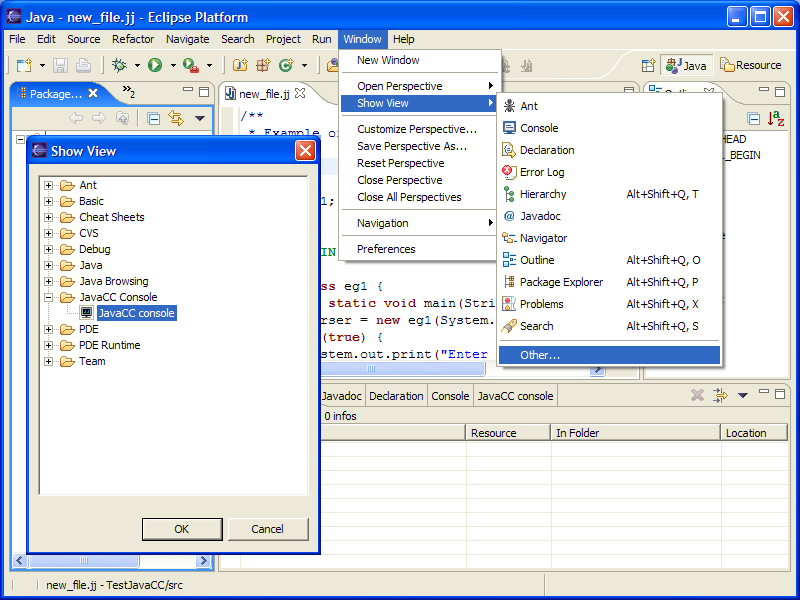
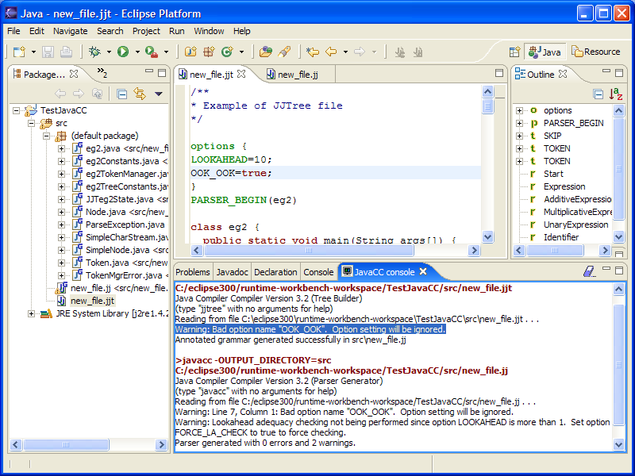

To show the Console use menu "Window" -> "Show
View" -> "Other..."
and choose "JavaCC Console" :

The console may help understand the error reported in the
"Problems" tab.
For examples :
JJTree reports a warning but doesn't give the line number.
The plugin is only parsing the JavaCC output, and cannot find a
non-existent information, so the warning will not be
reported.
JavaCC reports another warning about "Lookahead adequacy
checking not being performed..."
which is not reported as it is not containing
any line number.

There is a context menu on the text in the console, limited to
"Clear" and "Copy".
You cannot use the console to launch JavaCC, it is a just a text
view, not an editor, not a Shell.